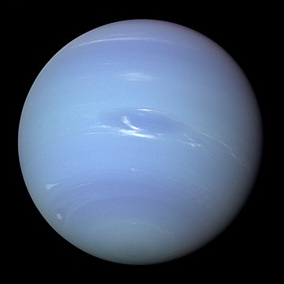

The first planet discovered with math.
Neptune—Dark, cold, and whipped by supersonic winds. Giant Neptune is the eighth and most distant major planet orbiting our Sun. More than 30 times as far from the Sun as Earth, Neptune is not visible to the naked eye. In 2011, Neptune completed its first 165-year orbit since its discovery. The planet’s rich blue color comes from methane in its atmosphere, which absorbs red wavelengths of light but allows blue ones to be reflected back into space.
